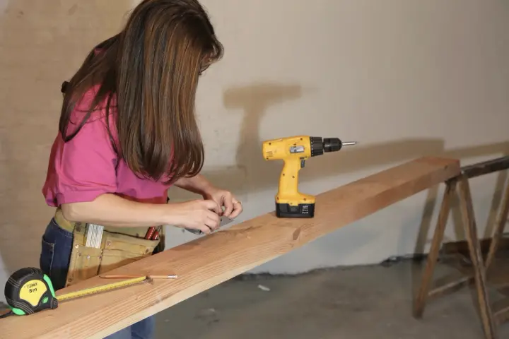
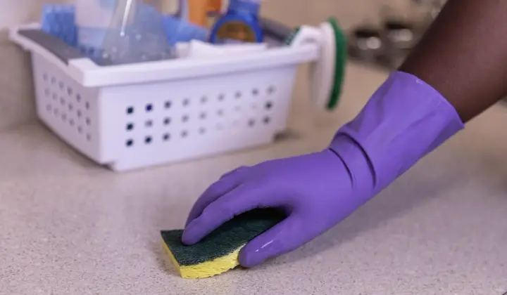

Marketing that moves.
SOLO helps service businesses figure out what’s getting in the way of growth, then builds the strategy, processes and systems to fix it. Practical marketing for businesses that are tired of guessing.
Who we work with
For businesses where the work is the product.
-
construction
& trades
Word of mouth built this.
It won’t grow it.
-
house cleaning
& home services
The calendar fills up.
Then it doesn’t.
-
dentists &
professional
practicesPatients love you.
New ones can’t find you.
-
lawyers &
law firmsReferrals slowed down.
There’s no plan B.
-
local
credit unionsMembers for life.
If they hear about you first.
-
financial
servicesTrust takes years.
Your website gets seconds.
Confirm the six industries and the short lines on each card. Photos are public-domain stand-ins.
The real problem
Great work shouldn’t be hard to find.
You don’t need more random marketing. You need a clear reason for people to care, and a connected system that turns that reason into action.
so how do the pieces fit?
-
From inconsistent marketing to consistent marketing.
Turn scattered activity into a focused plan.
- Ads someone else set up
- A Google profile, half done
- Referrals nobody tracks
- A website that undersells you
-
From messy systems to organized systems.
Connect the leads, the tools and the follow-up.
- Leads in five inboxes
- A CRM nobody updates
- Spreadsheets on spreadsheets
- Five tools, none connected
-
From lackluster growth to steady growth.
Measure what matters, then build on what works.
- Estimates that go quiet
- Follow-up, when there’s time
- Reports nobody reads
- Processes in one person’s head
same pieces, different order.
From stuck to moving.
No bloated process. Just four useful stages that turn uncertainty into a working marketing system.
-
01 / Discover
Listen.
Where you are. Where you’re going.
We learn what you sell, who buys it, how customers find you, and where the friction lives.
- Sales
- Marketing
- Customer journey
-
02 / Focus
Choose.
Identify. Prioritize. Act.
We identify the strongest position, the clearest priorities, and what should happen first.
- Positioning
- Priorities
- What comes first
-
03 / Create
Build.
From scratch, or from your blueprint.
We create the messaging, website, campaigns, and tools that make the strategy real.
- Website
- Messaging
- Tools
- Strategy
-
04 / Move
Learn.
Measure, and improve with clear data.
We launch, measure what matters, and improve the system based on evidence, not hunches.
- Processes & SOPs
- Data & KPIs
- Automation & AI
- Tech
How working together goes.
-
A discovery call.
Why are we talking? What’s getting in the way? Are we a good fit? No pitch deck... just an honest conversation about your business to see whether we’re the right fit. If we’re not, we’ll say so and point you somewhere better.
-
Draw the line.
A deeper working session to get everything on the table, from how people discover you, through the sale, to how you nurture customers afterwards. Lead sources, sales process, CRM, follow-up, reporting: what does it actually look like today?
-
Build what’s missing.
Strategy, sales process, systems, SOPs... whatever the plan says comes first. Made properly, and made to connect to everything around it.
-
Run it, read it, refine it.
the part most people skip
A steady rhythm: what we changed, what came back, what we’re adjusting next. Measure, learn, adjust, repeat... not guess, post, hope.
Start
where you are.
Understand. Build. Grow. If Signals is enough, we sell Signals, and SOLO never pushes a bigger service than you need.
-
Understand
Solo Signals
What is happening?
-
Build
Solo Launchpad
What needs to be built?
-
Grow
Solo Stack
How do we keep it working and improving?
Solo Signals
The diagnostic layer. Research and data turned into a clear picture of who your customers are, where they come from, and what you’re missing.
Includes Market and competitor research, website and channel audit, analytics and CRM review, recommendations.
Solo Launchpad
The strategy turned into a working foundation. Not everything perfect... just the important pieces working together.
Includes Positioning and messaging, sales process and CRM setup, website and landing pages, Google Business and local SEO, lead capture, tracking.
Solo Stack
The longer-term system of people, data, content, technology and process, built to keep producing insight and action.
Includes CRM and automation, SOPs, reporting and KPIs, lead follow-up, review systems, ongoing experiments.
Confirm each “Includes” list, and whether to show timelines or starting prices.
Small by design.
You work directly with a senior marketing partner who learns your business, explains the why, and keeps the important work moving.
You don’t need more stuff. You need the right pieces working together.
Proof, pending.
This is where real words from real clients will go. We don’t invent testimonials, so until they’re here, here’s what you can hold us to.
1 of 6
01
You’ll always know who is doing the work.
02
Every recommendation comes with the why behind it.
03
Plain-English reporting on a regular rhythm, not a dashboard to decipher.
04
If the data doesn’t say, we’ll say so. No guaranteed leads, no “10X”.
-
“
Reserved for a real client quote.
Client name, business, and permission to publish.
-
“
Reserved for a real client quote.
Client name, business, and permission to publish.
Let’s find your loose ends.
Four quick questions, about a minute. Then we’ll set up a discovery call, thirty minutes to an hour, no sales sequence, just a reply from a person.